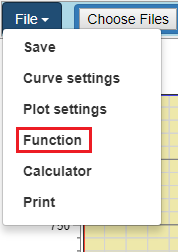
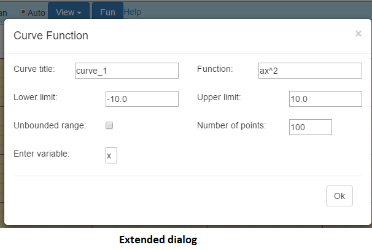

Plotting a function
Plotting a function
The Grapher allows plotting of functions. The functions may contain as much as five unknown coefficients. From the File menu, click "Function" to launch the Curve Function dialog. In the dialog, set the various attributes and click "Ok". That's it. The "Function" field of the dialog, allows many different forms of inputs:
Note: The "Lower limit" and "Upper limit" fields accept numbers or expressions (e.g. 2PI) that evaluates to numbers. If the "Enter variable" field is displayed, you must enter a valid variable. Valid variables are any alpha character other than 'z' or 'e'. 'z' is used internally by the application. Thus, you must not use 'z' for variables or coefficients. 'e' is a mathematical constant that is the base of the natural logarithm. The "Number of points" field can hold any value from 2 to 200. Too high a value leads to longer processsing time. Too small a value leads to curves that are not very smooth. The default of 100 is adequate for most user cases. If the "Unbounded range" field is checked, the limits are disregarded. If the plot is panned, the curve is redrawn to the new limits created by panning. Theoretically, the limits are infinite. |
 |
 |
Created with the Personal Edition of HelpNDoc: Generate EPub eBooks with ease